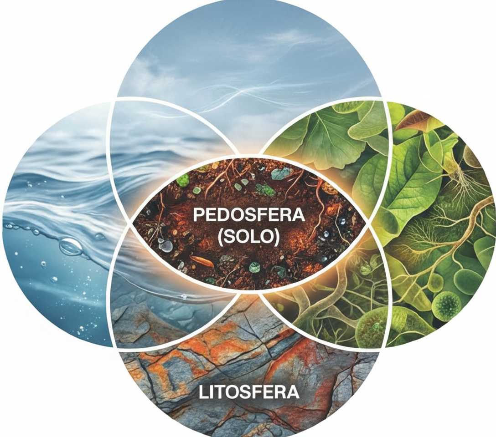
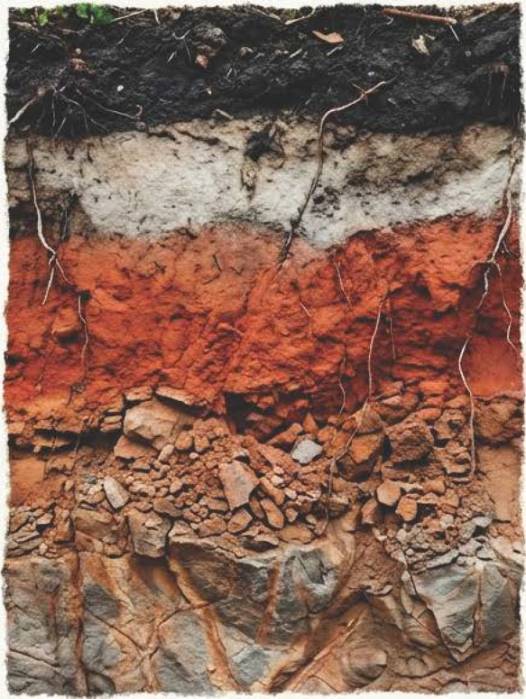
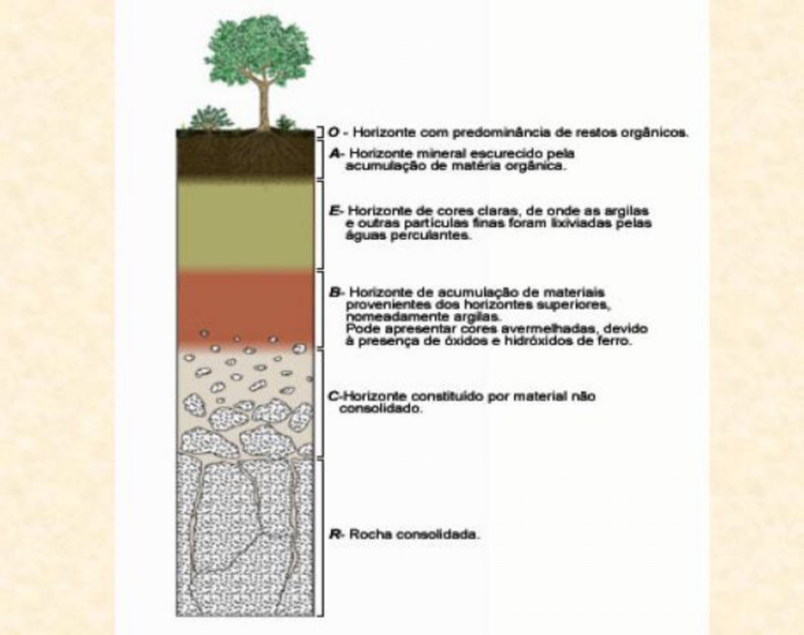
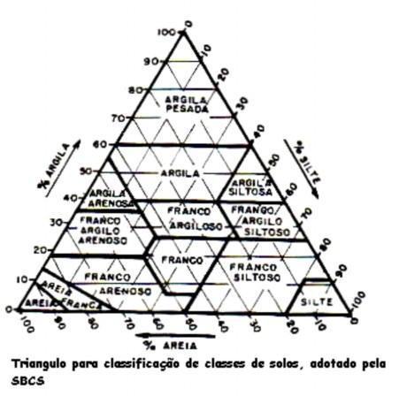
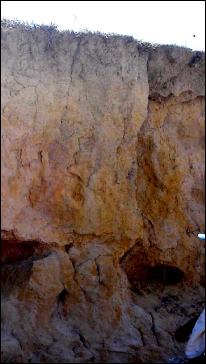
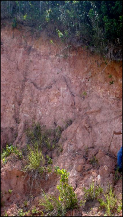

3 O Solo como Sistema Aberto
4 Solos Tropicais: Formação e Propriedades
Antes de projetar qualquer intervenção de bioengenharia, é indispensável compreender o material sobre o qual se trabalha. O solo não é uma massa inerte de partículas minerais; trata-se de um sistema aberto termodinâmico que troca continuamente matéria e energia com a atmosfera, a biosfera, a hidrosfera e a litosfera. Imagine o solo como uma “fábrica viva” que recebe água da chuva, gases da atmosfera, resíduos orgânicos e libera sedimentos dissolvidos, gases (como CO₂) e nutrientes em solução.
Em regiões tropicais, a intensidade dessas trocas é amplificada pela temperatura elevada (média anual > 20 °C) e pela abundância de água (precipitação acumulada frequentemente superior a 1.200 mm/ano), resultando em solos profundamente intemperizados e com características únicas. Essa combinação confere aos solos tropicais um conjunto de propriedades que os distingue radicalmente dos solos de regiões temperadas, com implicações diretas para o projeto de estruturas de bioengenharia.
4.1 A Equação de Jenny
A formação do solo é um fenômeno complexo cuja compreensão exige considerar múltiplos fatores atuando simultaneamente. A equação fatorial proposta por Jenny (1941) sintetiza esse entendimento, conforme ilustrado na Figura 4.1.
Matematicamente, qualquer propriedade do solo (\(S\)) pode ser expressa como função dos cinco fatores de formação:
\[ S = f(cl, o, r, p, t, \ldots) \]
onde \(S\) é a propriedade do solo (textura, cor, CTC, profundidade, etc.), \(cl\) representa o clima (precipitação e temperatura, que controlam a intensidade do intemperismo), \(o\) corresponde aos organismos (vegetação, fauna do solo, microrganismos que reciclam matéria orgânica), \(r\) é o relevo (que governa o escoamento da água e a redistribuição de sedimentos ao longo da encosta), \(p\) indica o material de origem (a rocha-mãe fornece os minerais primários a partir dos quais o solo é formado) e \(t\) é o tempo (solos tropicais bem desenvolvidos possuem idades da ordem de milhões de anos). O termo \(\ldots\) reconhece fatores adicionais, sobretudo a ação antrópica.
Na prática, a equação de Jenny ensina que dois solos formados sob o mesmo clima, relevo, material de origem, biota e tempo terão propriedades semelhantes. Por isso, quando se identifica, por exemplo, um Latossolo Vermelho em duas regiões distintas do Cerrado brasileiro, espera-se comportamento geotécnico e erodibilidade comparáveis, o que permite transferir experiências de bioengenharia entre localidades análogas.
O acrônimo ClORPT é uma forma didática de memorizar os fatores de formação do solo: Clima, Organismos, Relevo, Parent material (material de origem) e Tempo. Nos trópicos, o clima (especialmente a precipitação) e o tempo são os fatores dominantes, o que explica o intemperismo avançado mesmo sobre diferentes tipos de rocha.
4.2 Reator Biogeoquímico
Para entender por que os solos tropicais são tão diferentes dos solos de regiões frias, é útil pensar no solo como um reator biogeoquímico, conforme esquematizado na Figura 4.2.

Neste reator, quatro processos fundamentais operam simultaneamente. O processo de adição incorpora matéria orgânica pela deposição de serrapilheira, poeira atmosférica e solutos trazidos pela chuva. O processo de remoção retira material por lixiviação (percolação de água que dissolve e carrega íons), erosão superficial e extração por colheitas agrícolas. A transformação converte minerais primários em minerais secundários (argilas e óxidos) por reações de hidrólise, oxidação e redução, além de decompor matéria orgânica em húmus. Por fim, a translocação redistribui materiais internamente, movendo argilas de horizontes superiores para inferiores (fenômeno chamado eluviação/iluviação) e revolvendo o solo por atividade de organismos (bioturbação por minhocas, cupins e formigas).
Em regiões tropicais, as taxas de transformação são significativamente maiores devido à temperatura e umidade elevadas. Cada aumento de 10 °C na temperatura aproximadamente duplica a velocidade das reações químicas (Lei de Arrhenius). Isso resulta em três consequências fundamentais para a bioengenharia: a decomposição rápida da matéria orgânica (meia-vida inferior a 5 anos, contra 15–25 anos em zonas temperadas), a alta taxa de neoformação de argilas cauliníticas (minerais de baixa atividade) e a concentração residual de óxidos de ferro e alumínio pelo processo de laterização (que confere as cores vermelhas e amarelas características).
4.3 Perfil do Solo Tropical
Um conceito essencial para quem projeta intervenções de bioengenharia é o de perfil do solo, que consiste na sequência vertical de camadas (chamadas horizontes) que se desenvolvem desde a superfície até a rocha-mãe inalterada. Cada horizonte possui propriedades distintas de cor, textura, estrutura e composição química, e essas diferenças determinam como a água se infiltra, como as raízes se desenvolvem e onde o solo é mais suscetível a rupturas.
A Figura 4.3 apresenta um perfil típico de solo tropical, onde é possível observar a transição gradual desde a matéria orgânica superficial até o material parental inalterado em profundidade.

A representação esquemática dos horizontes e suas transições é detalhada na Figura 4.4, que permite visualizar as nomenclaturas padronizadas utilizadas em levantamentos de solo.

O perfil típico de um solo tropical bem drenado apresenta a sequência descrita na Tabela 4.1. Note que a espessura total do perfil pode ultrapassar 10 metros em Latossolos, enquanto em Neossolos Litólicos (solos rasos de encostas íngremes) pode ser inferior a 50 cm, condição que exige estratégias de bioengenharia completamente distintas.
| Horizonte | Profundidade típica | Características |
|---|---|---|
| O | 0–5 cm | Serrapilheira em decomposição; protege contra o impacto direto das gotas de chuva |
| A | 5–30 cm | Matéria orgânica humificada, cor escura; zona de maior atividade biológica e radicular |
| B | 30–200+ cm | Argilas cauliníticas, óxidos de Fe/Al, cor amarela a vermelha; horizonte diagnóstico |
| C | 200–1000+ cm | Saprolito (rocha parcialmente intemperizada); preserva estrutura da rocha original |
| R | > 10 m | Rocha-mãe inalterada |
Para a bioengenharia, a distinção entre horizontes é crítica. O horizonte A, rico em matéria orgânica e raízes, é o que se busca preservar ou reconstituir. O horizonte B, frequentemente espesso e laterizado, pode apresentar coesão aparente (estável quando seco, mas colapsável quando saturado), o que torna fundamental o controle da drenagem superficial e subsuperficial. Quando a erosão atinge o horizonte C ou mesmo o R, a recuperação é muito mais complexa e onerosa.
4.4 Propriedades-chave para Bioengenharia
4.4.1 Textura e Estrutura
A textura do solo (proporção relativa de areia, silte e argila) é uma das propriedades mais importantes para o projeto de bioengenharia, pois influencia diretamente a erodibilidade, a capacidade de infiltração e a resistência ao cisalhamento. A classificação textural é realizada com auxílio do triângulo textural, apresentado na Figura 4.5.

Para interpretar o triângulo textural, localiza-se o ponto de interseção entre as três frações granulométricas (obtidas por ensaio de granulometria em laboratório), e a classe textural resultante orienta as decisões de projeto. Os solos arenosos (fração areia > 70%) apresentam alta taxa de infiltração (> 50 mm/h), porém baixa coesão entre partículas, tornando-os altamente susceptíveis ao desenvolvimento de ravinas por escoamento concentrado. Os solos argilosos (fração argila > 35%), em contrapartida, possuem baixa taxa de infiltração (< 10 mm/h) e alta coesão quando secos, mas oferecem risco de deslizamento quando saturados, pois a água nos poros gera poropressão positiva que reduz a tensão efetiva. Já os solos siltosos são considerados os mais erodíveis, pois combinam baixa coesão entre partículas com baixa permeabilidade, o que gera escoamento superficial intenso capaz de transportar grandes volumes de sedimento.
4.4.2 Fator de Erodibilidade (K)
Para quantificar objetivamente a susceptibilidade intrínseca de um solo à erosão (independentemente da chuva, do relevo ou do uso do solo), utiliza-se o fator \(K\) da RUSLE (Renard et al., 1997):
\[ K = 2{,}1 \times 10^{-4} \cdot M^{1{,}14} \cdot (12 - a) + 3{,}25 \cdot (b - 2) + 2{,}5 \cdot (c - 3) \div 100 \]
onde \(M\) representa o produto \((\% \text{silte} + \% \text{areia fina}) \times (100 - \% \text{argila})\), \(a\) corresponde ao teor de matéria orgânica (%), \(b\) indica a classe de estrutura do solo (1–4, sendo 1 = granular muito fina e 4 = blocos, laminar ou maciça) e \(c\) refere-se à classe de permeabilidade (1–6, sendo 1 = rápida e 6 = muito lenta).
Em termos práticos, solos com alto teor de silte e areia fina (elevado \(M\)) e baixo teor de matéria orgânica (baixo \(a\)) resultam em valores de \(K\) elevados (alta erodibilidade), o que demanda maior proteção superficial pelas técnicas de bioengenharia. Solos tropicais laterizados tendem a apresentar \(K\) moderado (0,02–0,04 t h MJ⁻¹ mm⁻¹) graças à microagregação conferida pelos óxidos de ferro, apesar do altíssimo teor de argila.
4.4.3 Resistência ao Cisalhamento
A estabilidade de encostas e taludes depende fundamentalmente da resistência ao cisalhamento (\(\tau\)) do solo, descrita pelo critério de Mohr-Coulomb:
\[ \tau = c' + (\sigma - u) \tan \phi' \]
onde \(c'\) é a coesão efetiva (força de ligação entre partículas), \(\sigma\) é a tensão normal total (peso do solo acima do plano de ruptura), \(u\) é a poropressão (pressão exercida pela água nos poros, que “empurra” as partículas e reduz o atrito entre elas) e \(\phi'\) é o ângulo de atrito interno efetivo (resistência ao deslizamento entre partículas). Quando a poropressão (\(u\)) aumenta (por exemplo, durante chuvas intensas que saturam o solo), a tensão efetiva \((\sigma - u)\) diminui, a resistência ao cisalhamento cai e o talude pode romper. Esse é o mecanismo fundamental dos deslizamentos em encostas tropicais.
A bioengenharia intervém diretamente nessa equação. A presença de raízes aumenta a coesão do solo, adicionando um termo \(c_r\) (coesão radicular) à coesão efetiva. O incremento de coesão radicular pode ser estimado pelo modelo de Wu-Waldron:
\[ c_r = t_R \cdot \frac{A_r}{A} \cdot (\sin \theta + \cos \theta \cdot \tan \phi') \]
onde \(t_R\) é a resistência à tração das raízes (quanto uma raiz individual resiste antes de romper, medida em kPa), \(A_r/A\) é a razão de área radicular (proporção da seção transversal do solo ocupada por raízes) e \(\theta\) é o ângulo de distorção das raízes em relação ao plano de ruptura. Dessa forma, quanto maior a densidade de raízes e quanto mais resistentes elas forem, maior será o incremento de coesão e, portanto, maior a estabilidade do talude.
Em solos tropicais com vegetação herbácea estabelecida (como gramíneas Vetiver ou Brachiaria), o incremento \(c_r\) varia tipicamente de 5 a 25 kPa, podendo alcançar 40 kPa em solos com sistema radicular arbóreo denso. Para contexto, uma coesão de 10 kPa já pode significar a diferença entre um talude estável e um deslizamento em encostas com inclinações entre 30° e 45°.
4.4.4 Condutividade Hidráulica
A condutividade hidráulica saturada (\(K_s\)) é uma propriedade fundamental para o dimensionamento de sistemas de drenagem em projetos de bioengenharia, pois governa a taxa de infiltração de água no solo e a velocidade de dissipação de poropressões em taludes. Em solos tropicais, \(K_s\) apresenta comportamento paradoxal em relação à textura, especialmente nos Latossolos, onde a microagregação por óxidos de ferro confere permeabilidade elevada a solos com mais de 60% de argila (comportamento pseudo-arenoso). A determinação em campo é realizada por ensaio de infiltração com permeâmetro de Guelph ou infiltrômetro de duplo anel (ABNT NBR 7229), e em laboratório por permeâmetro de carga constante ou variável conforme NBR 14545.
A Tabela 4.2 apresenta valores típicos de \(K_s\) para as principais classes de solos tropicais brasileiros, obtidos a partir de compilação de ensaios publicados na literatura nacional. Esses valores orientam o dimensionamento preliminar de geodrenos (ver Capítulo 20), bacias de captação (ver Capítulo 10) e canaletas verdes (ver Capítulo 18), devendo ser confirmados por ensaios in situ na fase de projeto executivo.
| Classe de solo | \(K_s\) típico (mm/h) | Comportamento hidráulico | Implicação para bioengenharia |
|---|---|---|---|
| Latossolo argiloso (microagregado) | 50–200 | Rápida infiltração apesar do alto teor de argila | Drenagem natural eficiente, risco de erosão interna em descontinuidades |
| Latossolo arenoso | 100–500 | Muito permeável | Risco de percolação sob paliçadas, exige vedação de base |
| Argissolo (horizonte Bt) | 1–15 | Baixa permeabilidade no horizonte Bt | Gera lençol suspenso, essencial drenar a interface A/Bt |
| Plintossolo (petroplintita) | 0,1–5 | Quase impermeável quando endurecido | Exige drenagem superficial agressiva, limita enraizamento |
| Cambissolo | 10–80 | Variável conforme maturidade | Investigação local obrigatória |
| Gleissolo (saturado) | 0,5–10 | Saturação permanente | Exige espécies tolerantes a anaerobiose |
| Neossolo Quartzarênico | 200–800 | Extremamente permeável | Baixa retenção hídrica, Bio-SAP recomendado (Capítulo 21) |
A relação entre \(K_s\) e a intensidade da chuva de projeto (\(i\)) determina o mecanismo de geração de escoamento superficial. Quando \(i > K_s\) (escoamento hortoniano), a precipitação excedente forma escoamento superficial imediatamente, situação comum em Argissolos e Plintossolos com horizonte de impedimento. Quando \(i < K_s\) (escoamento por saturação), o solo infiltra toda a chuva até que a capacidade de armazenamento se esgote, gerando escoamento apenas quando o perfil satura por acúmulo progressivo, mecanismo dominante em Latossolos profundos durante eventos prolongados. No projeto de bioengenharia, a distinção entre esses mecanismos orienta a escolha entre proteção superficial (para escoamento hortoniano) e drenagem subsuperficial (para escoamento por saturação).
4.5 Principais Classes de Solos Tropicais
A classificação do solo é uma ferramenta fundamental para o engenheiro que projeta intervenções de bioengenharia, pois cada classe de solo apresenta comportamento geotécnico, erodibilidade e resposta hidrológica distintos. No Brasil, o Sistema Brasileiro de Classificação de Solos (SiBCS) identifica dezenas de classes, mas seis delas concentram a maioria dos desafios enfrentados em projetos de estabilização e controle de erosão. A Figura 4.6 e a Figura 4.7 ilustram as duas classes mais frequentes em projetos de bioengenharia no Brasil tropical.


O Latossolo (Figura 4.6) é o solo mais representativo dos planaltos tropicais brasileiros, ocupando cerca de 39% do território nacional. Trata-se de um solo profundo (frequentemente > 5 m), homogêneo, bem drenado e com alta agregação conferida pelos óxidos de ferro e alumínio. Apesar de sua estabilidade estrutural, quando desprovido de cobertura vegetal, o Latossolo é altamente erodível pela exposição direta ao impacto das gotas de chuva, que desagregam os microagregados superficiais. Em projetos de bioengenharia, a prioridade é a proteção da superfície (cobertura vegetal, biomantas, palhada) e a reconstrução da camada orgânica.
O Argissolo (Figura 4.7) apresenta um gradiente textural acentuado entre os horizontes A e B, com aumento expressivo no teor de argila em profundidade. Esse gradiente cria uma descontinuidade hidráulica que pode gerar lençol suspenso em períodos chuvosos, condição que favorece deslizamentos translacionais. A interface entre os horizontes A e B concentra a maior parte das rupturas, e o projeto de bioengenharia deve priorizar a drenagem subsuperficial e a ancoragem radicular profunda.
A Tabela 4.3 sintetiza as seis principais classes de solos tropicais e suas implicações para projetos de bioengenharia, servindo como referência rápida para a seleção de técnicas adequadas a cada situação de campo.
| Classe (SiBCS) | WRB equivalente | Ocorrência | Relevância para bioengenharia |
|---|---|---|---|
| Latossolo | Ferralsol | Planaltos bem drenados | Estáveis quando cobertos, mas altamente erodíveis quando expostos; proteção superficial prioritária |
| Argissolo | Acrisol/Lixisol | Encostas e tabuleiros | Gradiente textural favorece deslizamentos; drenagem subsuperficial essencial |
| Plintossolo | Plinthosol | Áreas de flutuação do lençol | Endurecimento irreversível ao secar (petroplintita); limita o enraizamento profundo |
| Neossolo Litólico | Leptosol | Encostas íngremes | Rasos (< 50 cm); alta susceptibilidade à erosão e deslizamento |
| Cambissolo | Cambisol | Relevos ondulados | Jovens e heterogêneos; propriedades variáveis exigem investigação local |
| Gleissolo | Gleysol | Várzeas e planícies | Hidromórficos, saturados e compressíveis; exigem espécies tolerantes a alagamento |